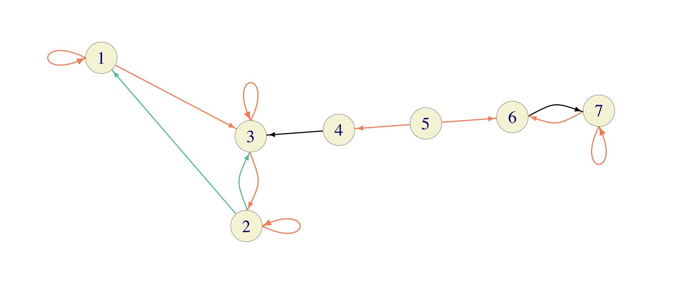
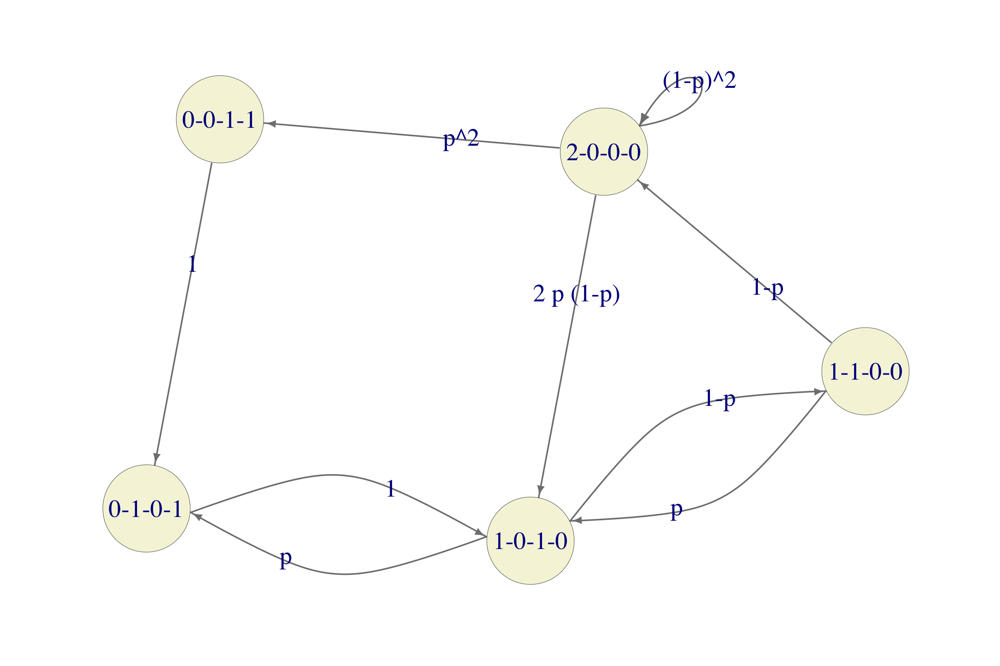

Chapter 9 Dumbledore: sl-prob-01
9.1 Additional Problems for Chapter 8
Note: do not use simulations in any of the problems below. Using R (or other software) to manipulate matrices or perform other numerical computation is fine.
357e6988e73fe273260c9eae3d5de0de94d0a72bLet \(\{X_n\}_{n\in {\mathbb{N}}_0}\) be a Markov chain with the transition matrix \[P=\begin{bmatrix} \frac{1}{4} & \frac{1}{4} & \frac{1}{2} \\ 0 & \frac{1}{3} & \frac{2}{3} \\ \frac{1}{3} & \frac{1}{3} & \frac{1}{3} \\ \end{bmatrix}\]
Find all stationary distributions.
The chain starts from the state \(i=1\). What is the expected number of steps before it returns to \(1\)?
How many times, on average, does the chain visit state \(2\) between two consecutive visits to state \(1\)?
Each time the chain visits the state \(1\), \(\$1\) is added to an account, \(\$2\) for the state \(2\), and nothing in the state \(3\). Estimate the amount of money on the account after 10000 transitions? You may assume that the Ergodic theorem provides an adequate approximation.
<<<<<<< HEAD Dumbledore: sl-mc-exam-07 ======= >>>>>>> 357e6988e73fe273260c9eae3d5de0de94d0a72b
Stationary distributions \(\pi=(\pi_1,\pi_2,\pi_3)\) satisfy \(\pi P=\pi\), i.e., \[% \label{equ:} \nonumber \begin{split} \tfrac{1}{4} \pi_1 \hspace{6.7ex} + \tfrac{1}{3} \pi_3 & = \pi_1 \\ \tfrac{1}{4} \pi_1 + \tfrac{1}{3} \pi_2 + \tfrac{1}{3} \pi_3 & = \pi_2 \\ \tfrac{1}{2} \pi_1 + \tfrac{2}{3} \pi_2 + \tfrac{1}{3} \pi_3 & = \pi_3. \end{split}\] We also know that \(\pi_1+\pi_2+\pi_3=1\), and that the matrix \(P\) is stochastic. Therefore, the third equation below is a linear combination of the first two, and can be exculded from consideration (this is always the case in problems with stationary distributions).
The first equation yields that \(\pi_3=\frac{9}{4} \pi_1\), and the second one that \(\pi_2 = \tfrac{3}{2} ( \tfrac{1}{4}\pi_1+\tfrac{1}{3} \pi_3)= \tfrac{3}{2} \pi_1\). It remains to find \(\pi_1\) such that \(\pi_1+\pi_2+\pi_3=1\), i.e, \(\pi_1+ \tfrac{3}{2} \pi_1+ \frac{9}{4} \pi_1=1\), i.e., \(\pi_1=(1+\tfrac{3}{2}+\frac{9}{4})^{-1}= \tfrac{4}{19}\). Therefore, \[\pi= (\tfrac{4}{19},\tfrac{6}{19},\tfrac{9}{19})\] is the only stationary distribution.
By Kac’s theorem, the number of steps between two returns to a state \(i\) (in an irreducible finite chain) is given by \[{\mathbb{E}}_i[\tau_i(1)]=\frac{1}{\pi_i}.\] Therefore, \({\mathbb{E}}_1[\tau_1(1)]= \tfrac{19}{4}\).
Also by Kac’s theorem, the number of visits to the state \(j\) between two consecutive visits to the state \(i\) (in an irreducible finite chain) is given by \[{\mathbb{E}}_i[ \sum_{n=0}^{\tau_1(1)} \mathbf{1}_{\{ X_n=j\}}]= \tfrac{\pi_j}{\pi_i}.\] Therefore, our chain will visit the state \(2\) on average \(1.5\) times between every two visits to the state \(1\).
The chain in question is irreducible and finite, so the law of large numbers applies: \[\lim_{N\to\infty} \frac{1}{N} \sum_{n=0}^{N-1} f(X_n)= \sum_{i\in\S} f(i) \pi_i.\] In our case \(f(1)=1\), \(f(2)=2\) and \(f(3)=0\), so the amount of money \(M=\sum_{n=0}^{10000} f(X_n)\) can be approximated as \[\label{equ:2919} \begin{split} M&= 10001 \times \tfrac{1}{10001} \sum_{n=0}^{10000} f(X_n)\approx 10001 \times (\ 1 \tfrac{4}{19}+ \ 2 \tfrac{6}{19})\\ &= 10001 \times \ \tfrac{16}{19}\approx \ 8422.% \end{split}\]
A county has 2 large cities and \(8\) small ones. Any two cities have a direct flight between them, except for the two large ones (since they don’t like each other very much). A traveler starts in a large city and moves around randomly by picking one of the available direct flights from their current city at random and taking it. What is the expected number of flights he or she will take before returning to the initial city for the first time?
This can be modeled as a random walk on a graph with \(10\) vertices \(S=\{1,2,\dots, 10\}\) where any two vertices are connected by an edge except for \(1\) and \(2\). We need to compute \(m_1 = {\mathbb{E}}_1[T_1(1)]\) which is, by Kac’s theorem, given by \(1/\pi_1\), where \(\pi\) is the (unique) stationary distribution. The degrees of vertices \(3,4,\dots, 10\) are \(9\) and the degrees of \(1\) and \(2\) are \(8\). Therefore, \(\sum_{i\in S} d(i) = 90\) and, so, \[ m_1 = \frac{1}{\pi_1} = \frac{\sum_{i\in S} d(i)}{ d(1)}= \frac{90}{8} = 11.25.\]
<<<<<<< HEAD Dumbledore: mc_prob3 =======
357e6988e73fe273260c9eae3d5de0de94d0a72bWonder Woman is moving from a vertex to a vertex of a cube, along its edges. Each time she reaches a vertex, she chooses one of the three edges that meet there with probability \(1/3\), independently of her previous choices. Assuming that it takes 1 min for Wonder Woman to cross an edge, what is the expected amount of time it will take her to return to the initial vertex? How about if the cube is replaced by a tetrahedron?
<<<<<<< HEAD Dumbledore: sl-prob-02 ======= >>>>>>> 357e6988e73fe273260c9eae3d5de0de94d0a72bThe situation can be modeled by a random walk on a graph whose vertices are the \(8\) vertices of a cube, with two vertices connected by an edge if and only if they share an edge of the cube. We know that random walks on graphs admit stationary distributions proportional to the degrees of the graph’s vertices. In our case each vertex has degree \(3\), so the (unique) stationary distribution is uniform \((1/8, \dots ,1/8)\). The expected return times are reciprocals of the probabilities in the stationary distributions, so the answer is \(8\).
In the case of a tetrahedron, the stationary distribution is \((1/4,\dots,1/4)\) and the answer is \(4\). In fact, the answer is equal to the number of vertices for any regular polyhedron.
Just like we did for the knight in an example above, compute the mean return time to the lower left corner for other chess pieces.
<<<<<<< HEAD Dumbledore: mc_prob1 ======= >>>>>>> 357e6988e73fe273260c9eae3d5de0de94d0a72bAssuming that they all start from the lower left corner, the mean return times are given by in the following table:
chess piece mean return time bishop \(\tfrac{280}{7} = 50\) rook \(\tfrac{896}{14} = 64\) queen \(\tfrac{1456}{21} \approx 69.3\) knight \(\tfrac{336}{2} = 118\) king \(\tfrac{420}{3} = 140\) pawn \(+\infty\) We assume that pawns don’t get promoted once they reach the last row; they just stay there.
Consider the Markov chain below  where equally colored edges represent equal probabilities. Find all stationary distributions. For each \(i\in \{1,2,\dots, 7\}\), compute the long-run proportion of time this chain will spend in the state \(1\).
<<<<<<< HEAD Dumbledore: friends ======= >>>>>>> 357e6988e73fe273260c9eae3d5de0de94d0a72bThis chain has two recurrent classes \(C_1=\{1,2,3\}\) and \(C_2 = \{6,7\}\). Their transition matrices \(C_1\) are given by \[P_{C_1}=\begin{bmatrix}1/2 & 0 & 1/2 \\ 1/4 & 1/2 & 1/4 \\ 0 & 1/2 & 1/2\end{bmatrix} \text{ and }P_{C_2} = \begin{bmatrix} 0 & 1 \\ 1/2 & 1/2\end{bmatrix}.\] The unique stationary distribution \(((\pi_{C_1})_1,(\pi_{C_1})_2,(\pi_{C_1})_3)\) for \(P_{C_1}\) satisfies the following system of equations \[\begin{aligned} (\pi_{C_1})_1 & = 1/2 (\pi_{C_1})_1 + 1/4 (\pi_{C_1})_2 \\ (\pi_{C_1})_2 & = 1/2 (\pi_{C_1})_2 + 1/2 (\pi_{C_1})_3 \\ (\pi_{C_1})_3 & = 1/2 (\pi_{C_1})_1 + 1/4 (\pi_{C_1})_2 + 1/2 (\pi_{C_1})_3,\end{aligned}\] and it follows that \((\pi_{C_1})_2 = 2 (\pi_{C_1})_1\) and \((\pi_{C_1})_3 = (\pi_{C_1})_2\). Since \((\pi_{C_1})_1+(\pi_{C_1})_2+(\pi_{C_1})_3=1\), we get \((\pi_{C_1}) = (1/5, 2/5, 2/5)\). Similarly, the system equations for \(\pi_{C_2}\) is given by \[\begin{aligned} (\pi_{C_2})_1 &= 1/2 (\pi_{C_2})_2 \\ (\pi_{C_2})_2 &= (\pi_{C_2})_1 + 1/2 (\pi_{C_2})_2.\end{aligned}\] Together with \((\pi_{C_2})_1 + (\pi_{C_2})_2 = 1\), we get \(\pi_{C_2} = (1/3, 2/3)\).
The states \(4\) and \(5\) are transient, so any stationary distribution must be of the form \[\pi = ( \alpha \frac{1}{5}, \alpha \frac{2}{5}, \alpha \frac{2}{5}, 0, 0, (1-\alpha) \frac{1}{3}, (1-\alpha) \frac{2}{3}),\] for some \(\alpha \in [0,1]\).
If the initial state \(i\) is \(6\) or \(7\), the chain will never visit \(1\), so the long run proportion is \(0\). If we start from \(1,2,3\) or \(4\), the chain will get absorbed in the class \(C_1\) and the long-run proportion of time spent at \(1\) is given by \((\pi_{C_1})_1 = 1/5\).
What happens when we start from \(5\) is a little bit more subtle. If the first step taken is towards \(6\), the answer is \(0\), and if the first step is towards \(4\), the answer is \(1/5\). Therefore, this long run proportion is not a constant. It is a random variable whose value is \(\frac{1}{5} \mathbf{1}_{\{X_1 = 4\}}\).
An Instagram influencer and die-hard foodie Ravi travels for work between Austin and Los Angeles. After he spends a week in Austin, he spends another week there with probability \(1/3\) or goes to Los Angeles with probability \(2/3\). After a week in Los Angeles, he always spends the next week in Austin.
His friend, Delphine, a tech enterpreneur and a passionate restaurant-goer herself, keeps a similar schedule. She also moves between Austin and Los Angeles, but, being a free spirit (and also a bit detached from reality), she makes her decisions by tossing a coin. No matter where she is, Austin or Los Angeles, she stays there with probability \(1/2\) for another week, or switches cities with probability \(1/2\), as well. Moreover, the coin she uses is just a coin - it is not magically influenced by Ravi’s current position in any way. Similarly, Ravi’s decision whether to stay or not has nothing to do with Delphine’s coin, or the city she is in.
Each time Ravi and Delphine find themselves in the same city, they go out on Friday night to try a new restaurant. If they happen to be in Austin, they pay \(\$100\) for the experience. Los Angeles is more expensive, and the typical dinner costs \(\$200\).
Ravi and Delphine are in Los Angeles this week. How many weeks will pass (on average) before they are both in Los Angeles again?
How many Austin dinners do they have, on average, between two Los Angeles dinners?
What is the long-run average amount of money they spend on restaurants each week?
Dumbledore: sl-prob-04We model the positions of Ravi and Delphine by a Markov chain with \(4\) states AA, AL, LA and LL (with the two letters denoting the cities they happen do find themselves in a given week). Ravi’s and Delphine’s positions, considered separately, are also Markov Chains, with the state space \(\{A,L\}\) and the transition matrices \[P^{R} = \begin{bmatrix} 1/3 & 2/3 \\ 1 & 0\end{bmatrix} \text{ and }P^{D} = \begin{bmatrix} 1/2 & 1/2 \\ 1/2 & 1/2\end{bmatrix}.\] Since Ravi’s and Delphine’s transitions are independent, the transition probabilities of the “joint” chain on \(S = \{\text{AA, AL, LA, LL}\}\) are simply products of the transition probability of the two individual chains. For example \(P_{AA, AL} = P^{\text{Ravi}}_{A, A}\times P^{\text{Delphine}}_{A,L} = 1/3 \times 1/2 = 1/6\). Therefore, the full transition matrix for the “joint” chain is given by \[P = \begin{bmatrix} 1/6 & 1/6 & 1/3 & 1/3 \\ 1/6 & 1/6 & 1/3 & 1/3 \\ 1/2 & 1/2 & 0 & 0 \\ 1/2 & 1/2 & 0 & 0 \end{bmatrix}\] with the states in the following order AA, AL, LA and LL. All the questions above use the stationary probability of this chain, so we compute it first. The system of equations for \(\pi = (\pi_{AA}, \pi_{AL}, \pi_{LA}, \pi_{LL})\) is \[\begin{aligned} \pi_{AA} &= 1/6 \pi_{AA} + 1/6 \pi_{AL} + 1/2 \pi_{LA} + 1/2 \pi_{LL} \\ \pi_{AL} &= 1/6 \pi_{AA} + 1/6 \pi_{AL} + 1/2 \pi_{LA} + 1/2 \pi_{LL} \\ \pi_{LA} &= 1/3 \pi_{AA} + 1/3 \pi_{AL}\\ \pi_{LL} &= 1/3 \pi_{AA} + 1/3 \pi_{AL}\\ \text{ as well as} \\ 1 = & \pi_{AA}+\pi_{AL} + \pi_{LA} + \pi_{LL}.\end{aligned}\] The first two equations immediately imply that \(\pi_{AA} = \pi_{AL}\), and the second two that \(\pi_{LA} = \pi_{LL}\). Moreover, by the third equation, we have \(\pi_{LA} = 2/3 \pi_{AA}\); similarly, \(\pi_{LL} = 2/3 \pi_{AL} = 2/3 \pi_{AA}\). We plug all of that into the last equation to get \[1 = \pi_{AA} + \pi_{AA} + 2/3 \pi_{AA} + 2/3 \pi_{AA},\] which gives \(\pi_{AA} = 3/10\), and, then, \(\pi_{AL} = 3/10\), \(\pi_{LA} = 1/5\) and \(\pi_{LL} = 1/5\).
By Kac’s theorem, the mean return time to LL is \(1/\pi_{LL} = 5\) weeks.
Also by Kac’s theorem, the average number of visits to AA between two visits to LL is \(\pi_{AA}/\pi_{LL} = 1.5\)
By the ergodic theorem, the long-run amount of money spent each week is \(\pi_{AA} \times \$100 + \pi_{LL}\times \$200 = \$ 70\).
Go back to the Problem with airline reservation system and the computer-repair facility in the last chapter. If the system starts with both computers operational, answer the following questions:
What percentage of time (on average) are both machines operable?
What is the long-run per-day cost associated with inoperable computers?
Most of the work has been done in the solution to the original problem in the previous chapter; please read it if you don’t remember what the names of the states mean. The Markov chain that we constructed there has the following graph 
Since both questions asked need the stationary distribution, let us compute it first. There are two difficulties. The first one is that the equation \(\pi = \pi P\) is not in the format R’s
solvecommand likes. That is easily fixed by transposing everything, i.e., by solving the equation \((I - P^T) \pi^T = 0\). The second problem is that the system of equations \(\pi = \pi P\) is underdetermined (if you sum all the equations you will get \(1=1\)) so that the additional requirement \(\pi_1+\dots+\pi_5=1\) must be added. We take care of both of these things by first forming the matrix \(M = I - P^T\) and then replacing its last row by a row of 1s. We also need to replace the \(0\) vector on the right hand side by the vector \((0,0,0,0,1)\). This way, the last equation becomes exactly \(\pi_1+\dots+\pi_5 = 1\). Here is how all of this is done in R:p = 0.3 S = c("0-0-1-1", "0-1-0-1", "1-0-1-0", "1-1-0-0", "2-0-0-0") P = matrix(c(0, 1, 0, 0, 0, 0, 0, 1, 0, 0, 0, p, 0, 1 - p, 0, 0, 0, p, 0, 1 - p, p^2, 0, 2 * p * (1 - p), 0, (1 - p)^2), byrow = TRUE, ncol = 5) M = diag(5) - t(P) M[5, ] = 1 v = matrix(0, nrow = 5, ncol = 1) v[5, 1] = 1 (p_stat = t(solve(M, v))) ## [,1] [,2] [,3] [,4] [,5] ## [1,] 0.02759354 0.1233262 0.319109 0.2233763 0.3065949The vector
p_statcontains the (unique) stationary distribution, so we can start by answering the two questions posed in the problem.
The percentage of time both machines are operable is \(\pi_{2-0-0-0}\). The order of 2-0-0-0 is \(5\), so the answer is approximately \(0.3066\).
This is the job for the Ergodic theorem. The reward (cost) function associated with the \(5\) states is \[\begin{align} f(\text{0-0-1-1}) &= 30,000 \\ f(\text{0-1-0-1}) &= 30,000 \\ f(\text{1-0-1-0}) &= 10,000 \\ f(\text{1-1-0-0}) &= 10,000 \\ f(\text{2-0-0-0}) &= 0 \end{align}\]
To get the expected long-term reward-per-day, we need to compute the product of \(\pi\) and \(f\) (understood as a column vector):
f = matrix(c(30000, 30000, 10000, 10000, 0), nrow = 5, ncol = 1) p_stat %*% f ## [,1] ## [1,] 9952.447⬇︎ In case you were wondering, the text below belongs to footnotes from somewhere high above.⬇︎